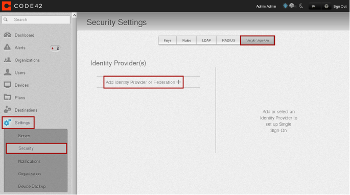
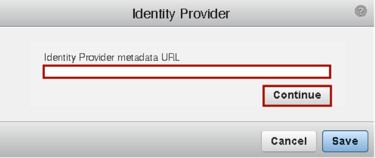
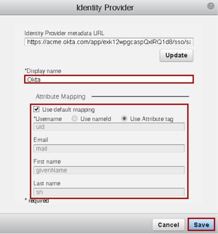
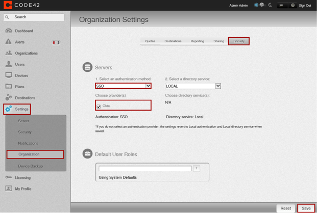
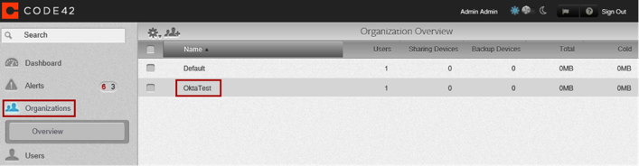
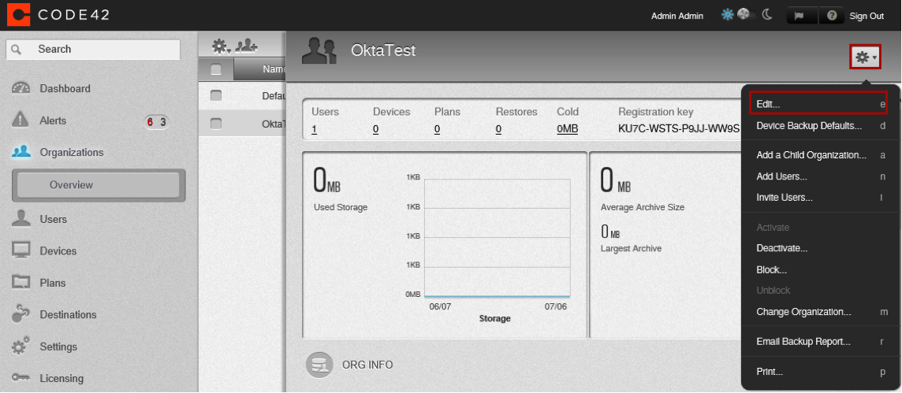
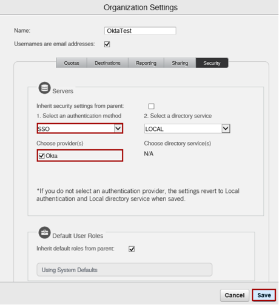
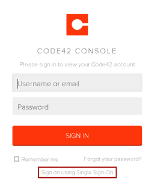

CrashPlan PROe supports an SP-initiated SAML flow. For the convenience of your end users, Okta recommends that you hide the CrashPlan PROe app and set up a Bookmark app with the CrashPlan PROe logo after you complete this SAML setup. For instructions on setting up a Bookmark app and hiding the original app, see Simulating an IDP-initiated Flow with the Bookmark App.
Two-way communication on TCP ports 80 and 443 between the Identity Provider and PROe Master Server is required. The Service Provider (Crashplan PROe) and Identity Provider (Okta) must be able to communicate with each other to perform metadata exchange
Sign in to CrashPlan PROe with administrator privileges. Go to Settings > Security, select the Single Sign-On tab, then select Add Identity Provider or Federation as shown below:

The Identity Provider screen appears.
Enter the following Identity Provider metadata URL, then click Continue.
Sign in to the Okta Admin app to have this variable generated for you

The Identity Provider additional settings screen appears (see screen below). Enter the following:
Display Name: Okta.
Make sure the Use default mapping checkbox is selected.
Click Save.

In the left navigational menu, select Settings > Server. Then in the Server Settings pane that subsequently opens, copy the value from the Website protocol, host and port field:

You can enable Okta SAML SSO in CrashPlan PROe globally, or for a particular organization.
Select the Settings > Organization > Security tab.
For Select an authentication method: Select SSO.
For Choose provider(s): Select Okta.
Select Save.

Select Organizations.
Click an organization name. In the example below, the organization name is OktaTest.

In the screen that opens for your selected organization, select the gear icon at the top right, as shown below; then select Edit on the menu that appears:

For Select an authentication method: Select SSO.
For Choose provider(s): Select Okta.

Done!
Notes:
IdP-initiated flows and Just In Time (JIT) provisioning are not supported.
For SP-initiated flows:
Go to your server URL and select the Sign in using Single Sign-On hyperlink on the sign in screen, as shown below:
